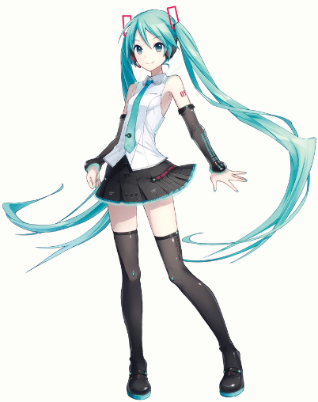
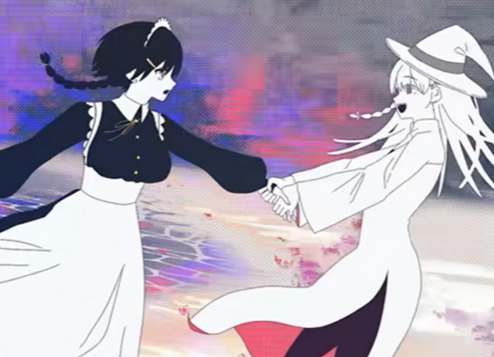
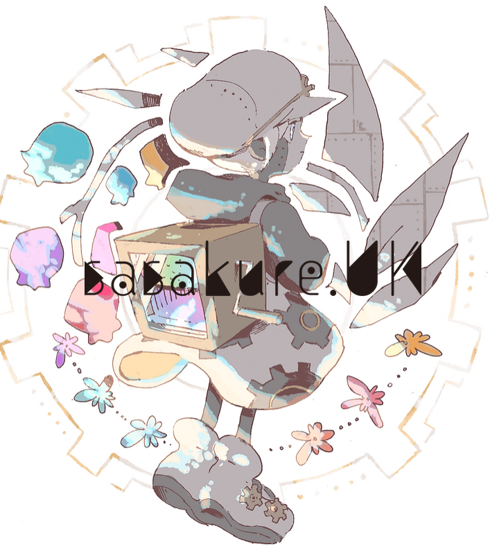
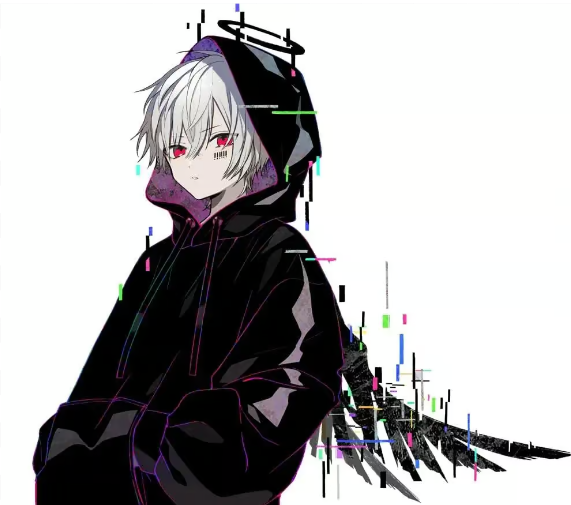

website by Cindy
VOCALOID is a singing voice synthesizer software developed by the Yamaha Corporation. It enables users to synthesize singing by typing in lyrics and melody. The software uses pre-recorded samples of human voices and applies them to the input, allowing users to create vocal tracks without needing a live singer. Each voicebank have a official anthropomorphic character, for example, Kaito, GUMI, Hatsune Miku, etc.
An Official Art for Hatsune Miku(V4)
The word "ボカロP" in english is Vocalo P, which means VACOLOID songs producer. The letter "P" comes from the english word "producer". Vocalo P are people who
The word "歌い手" means singer in english, and this word is used to describe singers who cover VOCALOID songs and post them on niconico(a website). "歌ってみた" means "Tried to Sing", and this word is from how 歌い手 usually write the topic for their cover video, for example: Donut Hole 歌ってみた【Eve】
ÅMARA by sasakure.UK
ロウワ― by ぬゆり
wowaka
sasakure.UK
picture of mafumafu
mafumafu's animate figure